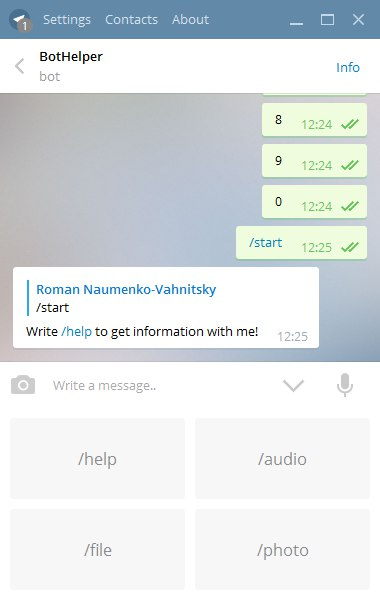
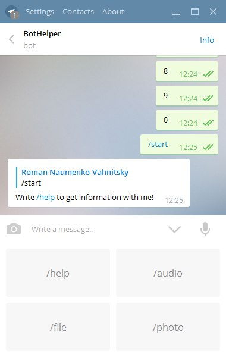

TelegramBot - Docs
Быстрый старт
Для того что-бы запустить своего бота вам нужно заполнить некоторые данные в файле "manifest.json"
{
"bot_name": "BotName",
"access_token": "You Token",
"host": false,
"port": false,
"data": {
"pause": 0.1
}
}
"bot_name" - имя вашего бота
"access_token" - токен для работы с api
"host" - ip адрес сервера(Если вы не используете WebHook, то данные можно и не заполнять)
"port" - port хост сервера(Если вы не используете WebHook, то данные можно и не заполнять)
"data" - разные хранимые данные
"pause" - задержка обращения к серверу
После заполнения данных можете запустить файл "main.py"
Настройка бота
Откроем файл "main.py" в текстовом редакторе.
Перед нами должен быть примерно такой код:
from app import Basic
bot = Basic()
bot.require([
["modules.test", "Test"]
])
def start(data, api):
if data["text"] == "/start":
api.on("sendMessage", {"chat_id": data["chat"]["id"], "text": "Write /help to get information with me!"})
def help(data, api):
if data["text"] == "/help":
api.on("sendMessage", {"chat_id": data["chat"]["id"], "text": "This is help!\n My commands:\n /audio - send audio file\n /photo - send photo \n /file - send document"})
def audio(data, api):
if data["text"] == "/audio":
api.on("sendAudio", {"chat_id": data["chat"]["id"], "path": "files/audio.mp3"})
def photo(data, api):
if data["text"] == "/photo":
api.on("sendPhoto", {"chat_id": data["chat"]["id"], "path": "files/photo1.jpg"})
def file(data, api):
if data["text"] == "/file":
api.on("sendDocument", {"chat_id": data["chat"]["id"], "path": "files/file.txt"})
bot.add(start, help, audio, photo, file)
bot.start()
Разбор кода:
Для начала мы подключаем библиотеку:
from app import Basic- Обычный(Мы обращаемся к https://api.telegram.org/bot*/*methodname*)
- И WebHook(Сервер Telegrama обращается с нашему серверу и передает данные)
Для первого варианта мы используем класс "Basic" а для второго "Server"
bot - Basic()
def start(data, api):
if data["text"] == "/start":
api.on("sendMessage", {"chat_id": data["chat"]["id"], "text": "Write /help to get information with me!"})
def help(data, api):
if data["text"] == "/help":
api.on("sendMessage", {"chat_id": data["chat"]["id"], "text": "This is help!\n My commands:\n /audio - send audio file\n /photo - send photo \n /file - send document"})
def audio(data, api):
if data["text"] == "/audio":
api.on("sendAudio", {"chat_id": data["chat"]["id"], "path": "files/audio.mp3"})
def photo(data, api):
if data["text"] == "/photo":
api.on("sendPhoto", {"chat_id": data["chat"]["id"], "path": "files/photo1.jpg"})
def file(data, api):
if data["text"] == "/file":
api.on("sendDocument", {"chat_id": data["chat"]["id"], "path": "files/file.txt"})
bot.add(start, help, audio, photo, file)
Здесь мы создаем методы для обработки данных.
Метод должен иметь 2 аргумента:
- data(Данные которые мы получаем, например текст или id пользователя который обратился к боту)
- api(Объект класса для работы с API Telegram'а включает большинство методов из официальной документации)
после того как мы создали свой метод мы должны его добавить для дальнейшей работы с ним
Для добавления используем метод .add().
def test(data, api):
pass
bot.add(test)
bot.start()Стандартные модули
На данный момент в библиотеке доступно 2 модуля:
- visualKeyboard(Создание визуальной клавиатуры)
- multiCommand(Команды в обычных и груповых чатах)
Метод - multiCommand()
Пример использования:
from app.modules import multiCommand
def start(data, api):
if multiCommand(data["message_text"], "/start"):
api.on("sendMessage", {"chat_id": data["chat"]["id"], "text": "Write /help to get information with me!"})
После этого ваш бот сможет отвечать не только на /start но и на /start@botname
Метод - visualKeyboard()
Пример использования:
from app.modules import visualKeyboard
def start(data, api):
if multiCommand(data["message_text"], "/start"):
keyboard = [
["/help", "/audio"],
["/photo", "/file"]
]
api.on("sendMessage", {"chat_id": data["chat"]["id"], "text": "Write /help to get information with me!",
reply_markup = visualKeyboard(keyboard)})
После вызова команды появится визуальная клавиатура.

from app.modules import multiCommand
def start(data, api):
if multiCommand(data["message_text"], "/start"):
api.on("sendMessage", {"chat_id": data["chat"]["id"], "text": "Write /help to get information with me!"})
from app.modules import visualKeyboard
def start(data, api):
if multiCommand(data["message_text"], "/start"):
keyboard = [
["/help", "/audio"],
["/photo", "/file"]
]
api.on("sendMessage", {"chat_id": data["chat"]["id"], "text": "Write /help to get information with me!",
reply_markup = visualKeyboard(keyboard)})

Модульная система
В нашей библиотеке есть модульная система, она предназначена для реализации больших методов.
Для добавления своего модуля есть метод .require()
bot.require([
["modules.test", "Test"]
])
# file modules/test/__init__.py
class Test:
def __init__(self, init):
pass
def update(self, data, api):
pass
Аргумент init в конструкторе содержит "data" данные "manifest.json"